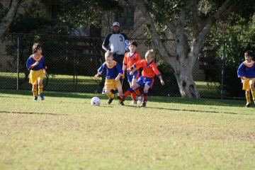
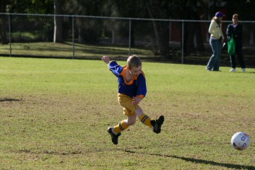
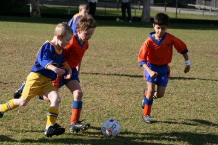
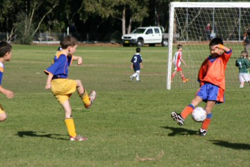
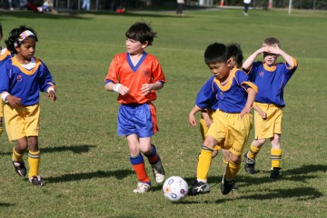
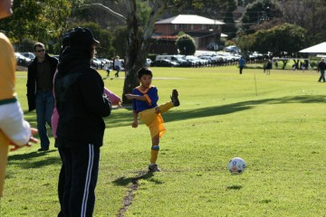
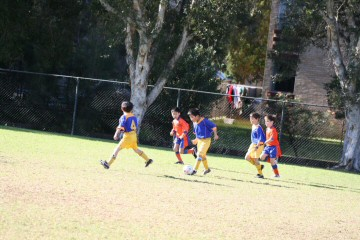
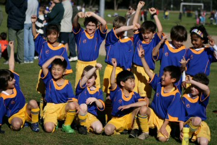
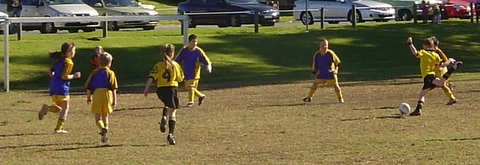
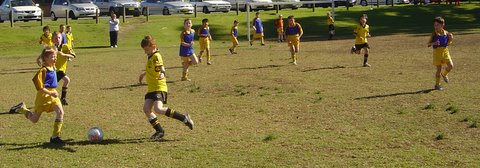

| Match Report - 19 July 2008 |
|
|
|
|
|
|
|
| U6 - White B |
North Ryde White Knights 7 - Ryde Saints United 3

|
|
|
|
This week was a great game against Saints United. The team work was
exceptional and made all the difference this week with a 7-3 victory!
Every week we see the confidence and personal skill level improve for all
of the kids, but today it all seemed to come together and great teamwork
was the result. There were always two of our players involved in tackling
the ball, we all moved forward in attack and lots of communication in
defence. There was lots to celebrate this week. Henry opened his scoring
account for the team this week with a spectacular goal, and once he tasted
success he was on a role and came close to scoring 2 more times and was
only denied by good defence. Congratulations Henry, great effort!
Hayden scored his first ever goal and backed it up with a second! He
definitely gets the award for best goal celebration of the season, he
turned around, jumped up and down and did aeroplane arms all the way back
to half way and jumped into the ref's (Dad's) arms for a big celebratory
hug. Nice work Hayden! Riley was on a mission this week. Not only was he
solid in defence blocking the opposition's attempts to score, but he showed
no fear in attack by dribbling around the defences to score this week as
well. Riley is showing great ability to read the play and understand the
game and is a great asset to the team. Excellent effort Riley!
Jasmine as always was very strong in defence clearing the ball from the
back line and made it very hard for the opposition to score. She also was
strong in the tackles and worked hard on pushing forward and supporting her
team mates. Her dribbling and passes help to set up some great goals for her
team mates. Nice team work Jazzy! Hugh also did a great job and was involved
in a lot of tackles in attack and defence. Hugh showed great enthusiasm and
his great team work was essential to the team's success, with lots of great
passes he showed no fear to the opposition. He supported his team mates well
and was involved in most of the action this week. Great job Hugh! Daniel
showed great skill in offence as he continues to dominate the opposition
with his dribbling and striking skills. He scored another bagful of goals
for his team this week. Fantastic effort Daniel, keep up the good work!
This week was a great week for our team. They all played so well and it was
a great game to watch. All of the players should be very proud of themselves
for a great effort. It was hard to pick just one player of the match so we
had to have two this week, so congratulations go to Hayden and Jasmine for
their hard work and team effort.
- Clare Parian
|
|
|
| U7 - Green |
|
North Ryde Koalas - Ryde District Panthers
|
|
|
|
Talk about a game of two halves! We were wondering if it was the same team
we had sent out to play the second half. Perhaps it was the hour and a half
'world cup' match on Wednesday that took its toll on our Koalas in the
second half.
After just one minute and one goal up it seemed that we might be in for
a special treat from the Koalas. The ball was being passed around with
precision and some blinding shots on goal particularly from
Jarvis seemed to be the order of the day. One
shot, from near halfway, which hit the target (and nearly destroyed it!)
would have done a seasoned professional proud. The game soon developed
into a tough close marking contest with no place for the faint hearted.
James and Lioda
consistently put their bodies on the line with some tight marking and
tackling. James has really perfected the pull-back but more impressively,
he knows just the right time to execute it.
Jaiden once again was fantastic. He suffered
another knock that sidelined him temporarily but before you knew it he
was back in the thick of it. He's a terrific little competitor who plays
well above his weight and just keeps on going... reminds me a bit of the
toy bunny in the Energiser battery ads. Our sweeper,
Daniel was ever reliable again snuffing out
some scoring opportunities kicking the ball to the safety of the sideline
and even found him with an opportunity to score on a couple of occasions.
This leads me to our Player of the Match this week. Our winner
Jack thoroughly deserved his award this week for
more than one reason. He played the game of his life this week to the point
where he was exhausted from all the running around he did throughout the
game. More impressively from my point of view, Jack has demonstrated maturity
that belies his age as he has waited 14 long weeks to win this award without
so much as a murmur whilst others have received the trophy more than once
(due to a brain snap from the manager and author of this report).
No matter whether we are scoring goals or conceding them, our guys play the
game in the same way and that's to have fun. This is an important trait that
Gary has instilled in all of them and will hold them in good stead as they
grow older. Congratulations to the Panthers who played a terrific game in
the right spirit.
- Paul Bonaventura
|
|
|
| U8 - Green |
|
North Ryde 3 - All Saints Hunters Hill 1
|
|
|
|
A week off payed dividends for the U8 Green's, because this week all the
team played well and all players got involved in the game. In the first half
it was very even but a great goal from Rhea and the score was 1-all at half
time. Matthew was rewarded with a goal and Man of the Match with his good
defence and great clearances. He was helped in defence from Andrhea who also
helped with some good tackling. Oscar and Rhea worked well up front with some
good passing and shooting. Mitchell pushed forward and scored a great left
foot goal. More goals could have been scored by the likes of Sam, but the
All Saints goal keeper made some very good saves. Sayta and Jerry helped
in moving the ball forward and Sayta was also rewarded with the Man of the
Match. Hamish was a great mid-fielder and put his body on the line with lots
of great dribbling and passing.
The pictures capture some of the story...
|

|

|
|
|
|

|

|
|
|
|

|

|
|
|
|

|

|
A good win by the North Ryde team, final score 3-1

- Stuart (Thomas's Dad)
|
|
|
|
|
|

It seemed liked ages since this reporter had been to a game or a training
session, what with holidays and all. We made the pilgrimage out to sunny
Carlingford for this end of school holiday match.
What a game! We were 2 players down, but that didn't deter us. It was great to see
the team motivated and excited to be running out there on this beautiful morning.
Josh was injured and went off in the first minutes,
but recovered quickly and returned bravely to the game, with obvious renewed energy!
Harrison in striker position had many attempts at goal,
and while most were unsuccessful, there was a beautiful pass from
Kireth which resulted in the only first half goal.

Man of the match Julian, had a couple of great saves as
goalie in the first half, and went on to provide great support as back in second half.
Thomas had a solid game, plenty of great passing, and a
great header from a throw in!
Encouragement Award of the day went to Tim who was
everywhere, showing great skill with tackling in particular.
Ben, also in midfield had a great game, with his
grandparents watching on.
Brooke provided great defence and some solid kicks upfield,
while Taylor enjoyed her first ever run as goalie.
Regardless of the score, North Ryde spent an impressive amount of time keeping Epping
Eastwood in their own half. Coach was missed by all. The English contingent of the Saba
Entourage commented that the team were much improved from last year!
- Michelle Saba (Assistant Coach)
|
|
|
|
|
|
Three players down and fortunately once again we had Pauline Condon recruiting U8 players.
This week it was Shannon Condon, Tom Hurst and Charlie Hammond that came to our
assistance. Many thanks to the boys! Great to see such young talent.
Ben returned from being away for tonsil removal and went into goals for the entire
game. Ben had a fantastic game! WPH had no less than 12 attempts at goal in the first
half with a 3 - 0 result. In the second half fewer chances were made at the NRS goal.
WPH only scored 1 goal in the second half. However WPH made two attempts at goal
after breaking past NRS defence, an open goal for the taking. Fortunately both
attempts were over-shot. All up, WPH made 19 attempts at goal in the entire game.
NRS usual pattern is minimal score against in the first half and then the boys appear
to tire in the second half. This week was very different. In the second half NRS had
greater possession of the ball and venturing into WPH goal area on a few occasions.
Unfortunately, we were unable to score a goal. Considering this team is at the top
of the divisional table we were able to minimise our loss and reduce WPH gain. Well
done boys!
Player of the match went to Lachlan for his
improvement in defence.
- Lesley Campbell (Manager)
|
|
|
|
|
|
It was a sunny morning for our first game at North Ryde Oval and the whole
team was ready to take on a very good North Epping team.
First half action
In the first half Epping was playing very strongly and within the first few
minutes North Epping had a good one-on-one chance but Lewis made good work
of that. We had a few chances early too with Cameron and Elia working hard
up front and Luke just doing what he usually does... running fast and also
having a few chances. Lucky for us (and especially me) an Epping player was
caught off-side but they didn't give up with a sky-rocketing kick that I
caught with a lot of trouble after the sun decided to shine in my face. Ben
was doing very well in this game with some great kicks to help the defence
and Nathan doing very well to keep North Epping's most dangerous player out
of action. On the wings Kyle was doing very well getting some chances and
setting up a few chances with some helpful passes. Chris was having one of
his best games yet saving more goals then I did and being the best defender
a goalkeeper could have and with Nathan by his side nothing was getting
through.
Second half action
The Nitros came out and were ready to play with Zac, Cameron, Kyle and Tom
having a few chances. Hayden was putting pressure on the other team with his
fantastic skills to take on 4 players and still have the ball at his feet.
Then the ball was making its way down to our goal and yet again Chris gets
the ball and smashes it up to Cameron for yet another chance but no luck.
Now North Epping was putting the pressure on with some very good chances
but just not kicking it in the goals (phew!) and ended up being a corner
with Arman saving the first corner with a header and Hayden saving the
second one with a kick. It was getting to the end of the game and we were
desperate for a goal then Cam got the ball and took a shot with it just
missing the goals (nooooo) it was so close and for his valiant efforts
Cam was awarded Man of the Match. Well done!
In the end it was a tied game and every single player on our team did
their best. We had a very strong defence with Lachlan, Chris, Nathan,
James and Lewis), a great mid-field with Ben, Hayden, Tom, Arman and Kyle,
and a really good forward line with Cameron, Elia and Luke.
Well Done Nitros
- Lachlan Coyle (Player)
|
|
|
|
|
|
A fine team effort saw the boys redeem themselves somewhat after a very
disappointing result last week which saw them drop out of semi-final
contention. The team played an outstanding brand of football with some
solid teamwork supplemented by some inspirational individual performances.
The outstanding performance by Liam T to score a great individual goal
following a determined break from well within his own half and to overcome
some rather rough defence on the edge of the penalty area was indicative
of the effort that all the team showed on the day. Liam was more than ably
supported at the back by Sam B who played with his usual cool exuberance.
The defence in this match was outstanding with only 1 shot on goal allowed
to the opposition with William G only having to make 1 save in the entire
game. Conversely, our attacks led to 22 shots on goal forcing the opposing
keeper to make 12 saves. (For once the statistics match the result achieved).
Lewis B was his usual determined non step self tackling strongly and
distributing the ball well to support players. Victor T defended well and
provided some great attacking runs and continually troubled the defence out
wide.
John P was rewarded for another strong game (although playing with an
injured knee) with 2 well taken goals. A great effort for the team John.
Goal scorers were: John P - 2, Liam T - 1
I would like to congratulate the whole team for a fine effort in this game.
There was not a bad performance on the day and hopefully the team can carry
this form into the pennant rounds over the next few weeks and bring the
pennant home to the club
- Bill Greer
|
|
|
|
|
|
First half highlights
With Flocko on more pressing duties, Manu AWOL and Hicko not 100% (but when
is he ever), Nth Ryde were going to have some issues, but who would come to
save the day... it was the return of the Eagle - aka Mark M! So the midfield
would be organised and feeding some nice balls through to the forwards - or
would they? This game had Nth Ryde in the situation where if they won, the
boys would be cemented in fourth spot, anything less would mean next weeks
game would be a must win. Read on to find out all the gory details...
Ok, this is how it went:
- Ref blows whistle
- Holy Cross kick off
- Nth Ryde are still asleep
- 10 seconds later Holy Cross scores
Mmm, is there something wrong with that picture? We were all scratching our
heads on the sidelines and the champagne corks hadn't even started to pop
yet! But did the crowd get fired up! They sure did!
Next play:
- Nth Ryde kicks off
- Couple of passes
- Dutchie has a shot and misses
- After this bad indiscretion, a repeat play was ordered by the
sideline, which we got! 2 minutes in, Dutchie converts 1-1!
This was a weird game! I didn't have time to blink, but then the play finally
settled and Nth Ryde put some beautiful through balls onto the forwards. Ado
had a really nasty tackle dealt on him and the whole of Nth Ryde could have
heard him curse. This lead to a free kick, however Ado got his own back a
couple of minutes later and got yellow carded for the offering! The play
continued in what was to become a see-sawing affair. Macca ended up on the
end of a lovely ball and had a clean run to the keeper. As he always tells
his children, don't shoot the ball straight at the keeper, so what did he do?
Hit the ball straight at the keeper! He redeemed himself shortly afterwards
though by putting a brilliant ball onto the foot of the running Dutchie. It
was Dutchie on keeper and they both got to the ball at the same time in a
massive hit and dust up on the penalty spot. It wasn't to turn into a goal
unfortunately. Shortly after Holy Cross hit back to take the lead by 2 goals
to 1.
Nth Ryde had another chance soon after with a header by Pommie from a great
throw in from Macca but the keeper was there to clean up the spoils. Nth Ryde
made some replacements and were making some poor errors on the field along
the way. Clearances weren't quick enough and balls were not being placed to
feet. They needed to settle and play their own game. Finally Col ended up
crossing a beautiful ball and Mark M (thank goodness he was back!) was there
to bang it home. Two goals apiece.
The sideline looked like a M.A.S.H. ward with lots of ice helping out the
injured Nth Ryde boys. Ado and Hicko were both sidelined. Firgal was trying
his heart out and running around like a leopard. Would it be worth it?
Half time 2-2.
1-0 Nth Epping Rangers
Second half highlights
Firgal had earned his rest and Dutchie was back into the play. Nth Ryde
needed to remain composed to be on top of Holy Cross at the finish. Pierre
and Bruce were sweating on through balls and looked liked lions about to
pounce on anything g decent. Holy Cross had some early chances but couldn't
convert with some great saves pulled off by Agro. Smithy's head got in the
way a few times too. The second half seemed less eventful than the first -
well at least the first 2 minutes were! Nth Ryde were given a free kick as
a result of some heavy pushing on Pierre. Dutchie stepped up to take the
free about 15 minutes out. It was the sweetest hit I had ever seen. It
curled perfectly into the back of the net. My phone started ringing - it
was Manchester United and they wanted to sign Dutchie up. I told them he
was not for sale! 3-2 Nth Ryde. It was the Mark and Mark show (thank
goodness Mark M was back!)
Soon after Macca was on the end of a yellow card with some silly back chat
- yes we know Macca, you only slipped and it wasn't a bad tackle and we know
the ref was watching the game from Epping Rd, but he has the cards in his
pocket and will deal them out at his discretion! All of a sudden the play
went from pretty bad to pretty worse. Holy Cross were taking dives when they
felt like it and the sideline got involved. The ref made us pay by giving
into the theatrics of the Holy Ones. Agro had to do some work, he went flying
in to save a ball and in the process a Holy Cross player ended up flat on his
stomach. He got the penalty but didn't move for 2 minutes. It was something
that NIDA would have been proud of. Agro got yellow carded for his back chat
and the sideline went crazy. He had to face up to the penalty shot though and
Nth Ryde lost the lead. 3-3. The boys had their opportunities but had choked.
Let's hope that Greg Norman doesn't hear anything about it!
The draw means that next week will be interesting! Did I mention that we were
really lucky to have Mark M back?
- FF
|